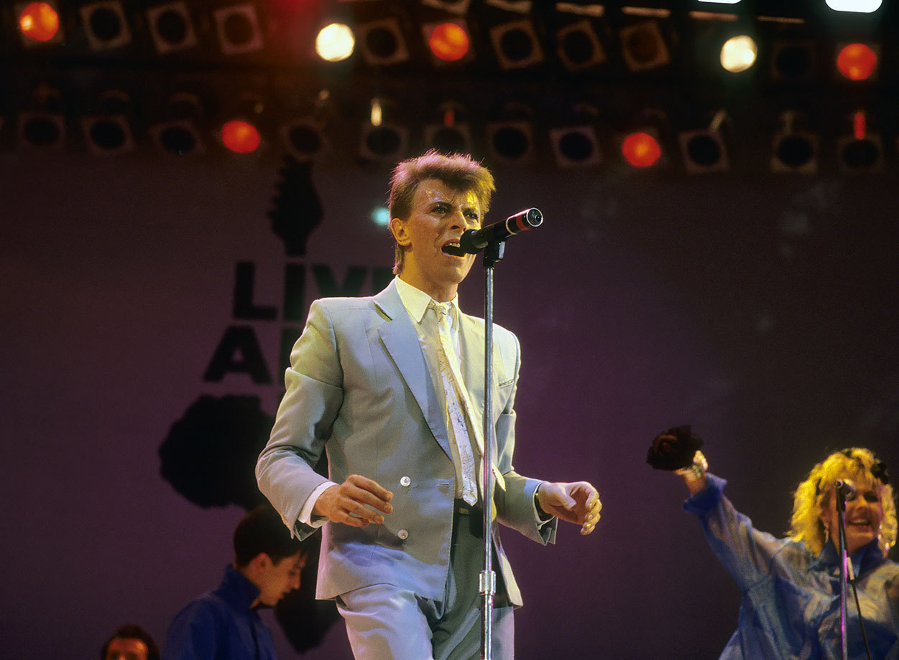
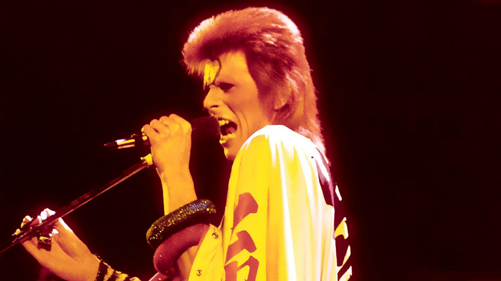
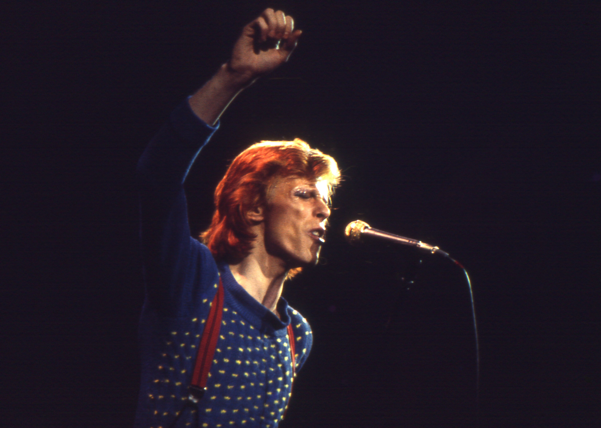
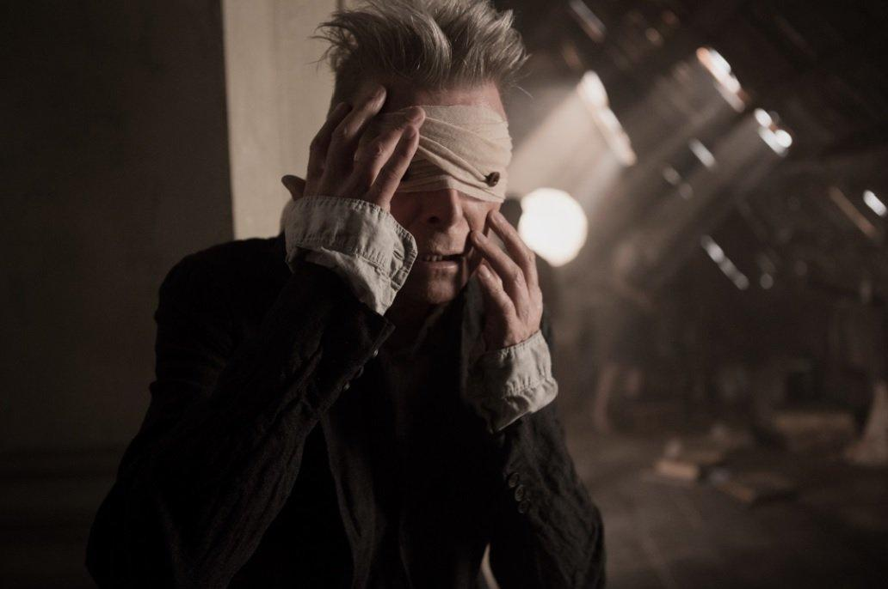

HISTORIA E VIDA
David Bowie nasceu como David Robert Jones em Brixton, Londres, em 8 de janeiro de 1947. Sua mãe, Margaret Mary "Peggy", era descendente de irlandeses e trabalhava como arrumadeira de cinema, enquanto seu pai, Haywood Stenton "John" Jones, era oficial de promoções da Barnardo's. A família vivia no número 40 da Stansfield Road, próximo da fronteira das zonas londrinas do sul de Brixton e Stockwell. Um vizinho lembrou que "Londres na década de quarenta era o pior lugar possível, e o pior lugar possível para uma criança nascer." Bowie freqüentou a Stockwell Infants School até seus seis anos de idade, adquirindo reputação de garoto com talento para cantar e, principalmente, gritar.

Cantor, compositor, ator e produtor musical britânico. Por vezes referido como "camaleão do Rock" pela capacidade de sempre renovar sua imagem, tem sido uma importante figura na música popular há cinco décadas e é considerado um dos músicos populares mais inovadores e ainda influentes de todos os tempos, sobretudo por seu trabalho nas décadas de 1970 e 1980, além de ser distinguido por um vocal característico e pela profundidade intelectual de sua obra.
Espiritualidade e religião
Ao longo dos anos, Bowie fez inúmeras referências às religiões e à sua espiritualidade em evolução. Começando em 1966 com a influência de seu irmão,[194] ele se interessou pelo budismo e considerou se tornar um monge budista.[195] Depois de alguns meses de estudo na Tibet House em Londres, um lama disse a ele: "Você não quer ser budista. ... Você deve seguir a música."[196] Em 1975, Bowie admitiu: "Eu me sentia totalmente, absolutamente sozinho. E provavelmente eu estava sozinho porque tinha praticamente abandonado Deus."[197] Em seu testamento, Bowie estipulou que ele fosse cremado e suas cinzas espalhadas em Bali "de acordo com os rituais budistas".[198]

Legado
A influência de David Bowie é imensa, musical e socialmente. Suas canções e as apresentações inovadoras trouxeram uma nova dimensão para a música popular do começo da década de 70, influenciando fortemente tanto suas formas imediatas como seu desenvolvimento posterior. Pioneiro do glam rock, de acordo com vários críticos Bowie criou o gênero ao lado de Marc Bolan.[230] O biógrafo David Buckley considera que, nessa época, ele surgiu como a última estrela pop de todos os tempos e que nenhuma outra veio a existir após dele; sua produção musicals durante a década criou um dos maiores cultos da cultura pop.

O sucesso de 1969 "Space Oddity" levou-o a receber um Ivor Novello especial por sua originalidade.[258] Por sua atuação no filme de ficção científica The Man Who Fell to Earth de 1976 ele ganhou um Prêmio Saturn de Melhor Ator.[259] Nas décadas seguintes, foi agraciado com diversos prêmios especializados em música por suas canções e seus vídeo clipes recebendo, entre outros, dois Grammy Award e dois Brit Awards. Em 1999, Bowie foi convidado a ser Comandante da Ordre des Arts et des Lettres do governo da França.[263] No mesmo ano, recebeu um doutorado honorário da Berklee College of Music.[264] Em 2000, recusou a condecoração de Ordem do Império Britânico e, em 2003, recusou tornar-se Cavaleiro da Ordem do Império Britânico, declarando: "Nunca tive a intenção de aceitar algo como isso. Realmente não sei para que serve. Não foi para isso que passei minha vida trabalhando".

Morte
Na noite do dia 10 de janeiro de 2016, dois dias após o seu sexagésimo nono aniversário e o lançamento do álbum Blackstar, Bowie morreu em seu apartamento em Nova York, vítima de câncer de fígado.[160] O músico foi diagnosticado com a doença dezoito meses antes, mas optou não anunciar seu estado de saúde para o público.[161] O diretor de teatro belga Ivo van Hove, com quem trabalhou no musical Off-Broadway Lazarus, disse que Bowie evitou assistir os ensaios pelo avanço da doença. Hove observou que David estava trabalhando constantemente durante o diagnóstico.

Blackstar (estilizado como ★) é o vigésimo quinto e último álbum de estúdio do cantor britânico David Bowie, lançado em 8 de janeiro de 2016, no sexagésimo nono aniversário do músico e dois dias antes de sua morte.[5] Sua doença não tinha sido revelada ao público até então. Co-produtor Tony Visconti descreveu o álbum como um canto do cisne planejado de Bowie e um "presente de despedida" para seus fãs antes de sua morte.